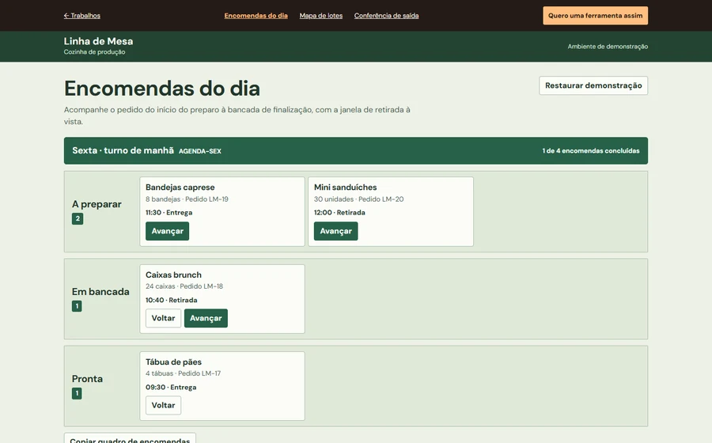
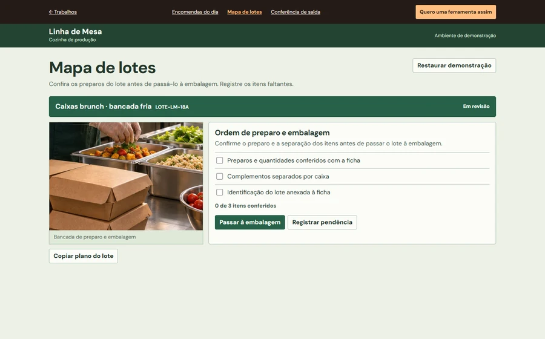
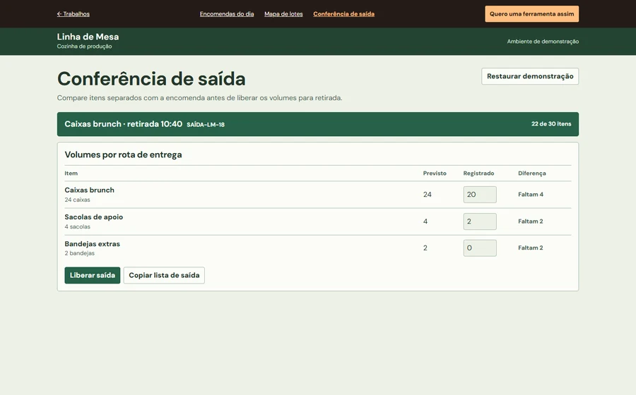

Linha de Mesa
Organize encomendas, preparos e expedição da cozinha. Escolha uma das três experiências para testar o fluxo.

Encomendas do dia
Acompanhe o pedido do início do preparo à bancada de finalização, com a janela de retirada à vista.

Mapa de lotes
Confira os preparos do lote antes de passá-lo à embalagem. Registre os itens faltantes.

Conferência de saída
Compare itens separados com a encomenda antes de liberar os volumes para retirada.